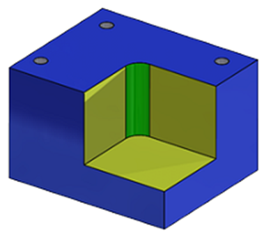
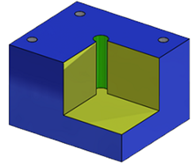
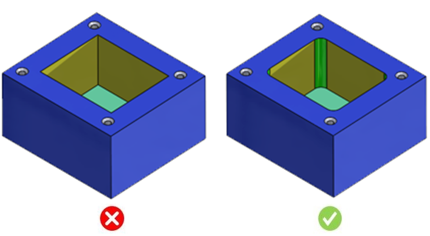

シャープな内側コーナーは加工が難しく、特殊な加工工程を必要とするため、コストが高くなります。
シャープな内側コーナーはフライス加工では製作できず、放電加工（EDM）などの非常に高価な加工方法が必要になります。そのため、側面コーナーには常にR（丸み）を付けることが推奨されます。
三方向に交わる内側コーナーを設計する場合、内側エッジのいずれか一つにはRを付ける必要があります。
最小Rは、Deep Radiused Corners ルールで指定されている値に従う必要があります。

嵌合クリアランスのためにシャープなコーナーが必要な場合は、以下に示すように、別途リリーフ穴を追加することで対応できる場合があります。

このルールは、シャープな内側コーナーにフィレットが付与されているかどうかをチェックします。そのため、構成情報の設定は不要です。
